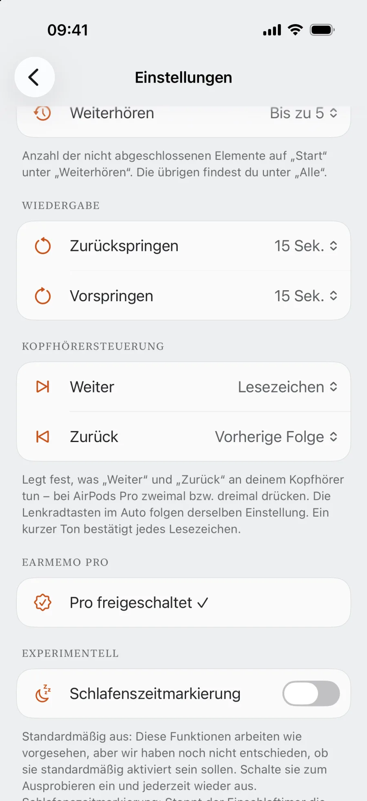
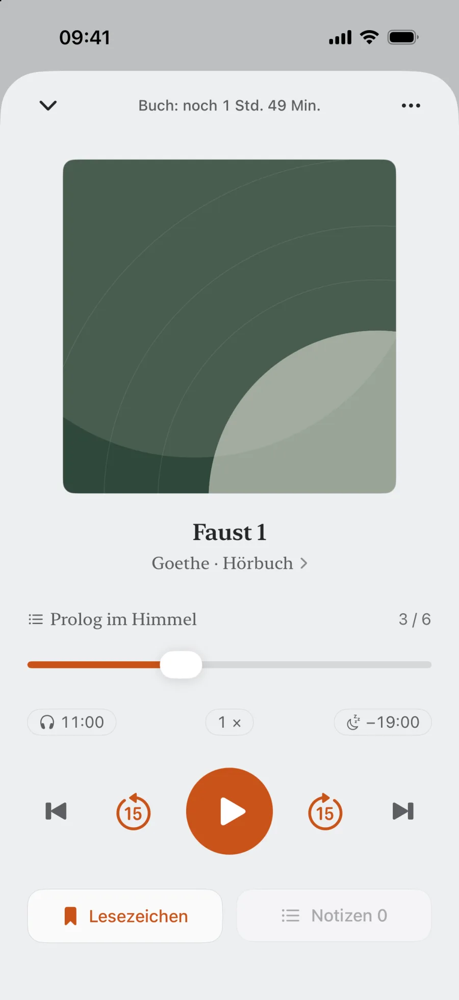

Hör, was dir gehört.
Höre deine eigenen MP3- und M4B-Hörbücher, Vorträge und Aufnahmen auf dem iPhone. EarMemo merkt sich deine Wiedergabeposition und verknüpft Notizen sekundengenau mit der Aufnahme. Auch mit den Tasten deiner AirPods kannst du Stellen markieren. Zum Abspielen brauchst du weder Konto noch Internet.
Kein Abo · Pro einmalig freischalten


Warum EarMemo
Andere Player kämpfen um deine Aufmerksamkeit.
EarMemo lässt dich in Ruhe hören.
Kein Empfehlungsfeed, kein automatischer Start der nächsten Folge, keine endlose Liste. EarMemo sammelt deine heruntergeladenen Hörbücher, Vorträge und langen Aufnahmen an einem Ort. Halte bei dem Satz an, den du behalten willst. Morgen hörst du genau dort weiter.
Notizen
Notizen, die dich zurückbringen
Etwas gehört, das bleiben soll? Einmal tippen und weiterhören. Schreib jetzt oder später etwas dazu. Jede Notiz ist an einen Zeitstempel gebunden. Tippe darauf, um genau zu dieser Sekunde zurückzuspringen.
Drücke während der Wiedergabe auf „Markieren“. Tippe auf einen Zeitstempel, um zurückzuspringen.
- Mit einem Tippen von der Notiz zur Audiostelle
- Nach Album und Folge geordnet, bei Hörbüchern auch nach Kapitel
- Notizen mit dem einmaligen Pro-Kauf als Markdown exportieren
Kopfhörer
Markieren, ohne das Handy herauszuholen
Das Handy steckt in der Tasche, die Hände sind beschäftigt, und gerade fällt ein wichtiger Satz. Drücke zweimal auf den Stiel deiner AirPods: Ein kurzer Ton bestätigt die Zeitmarke. Sie wird zwei Sekunden vor der aktuellen Wiedergabeposition gesetzt, damit der Satzanfang dabei ist. Deine Notiz kannst du später ergänzen.
- Einmal einrichten. Einstellungen → Kopfhörersteuerung → Weiter: Lesezeichen
- Zweimal drücken auf den AirPods Pro (dreimal, wenn du „Zurück“ belegt hast)
- Der Bestätigungston erklingt. Die Zeitmarke ist in deinen Notizen.
- Jede Betätigung setzt eine eigene Zeitmarke, auch in der Gratisversion unbegrenzt
- Die Lenkradtasten im Auto verwenden dieselbe Einstellung


Deine Mediathek
Alles, was du gerade hörst, an einem Ort
Ein Bildschirm für alles, was du gerade hörst. Jede Aufnahme merkt sich Position und Restzeit. Tippen und weiterhören, ohne zu suchen oder zu rätseln, wo du warst.
- Sekundengenau an der letzten Stelle weiterhören
- Dateien in Alben ordnen und nach Wunsch sortieren
- Die heutige Hörzeit direkt oben sehen
Hörbücher
Kapitel hören und das ganze Buch im Blick behalten
Bücher mit eingebetteten Kapiteln, etwa M4B, öffnen sich mit Inhaltsverzeichnis. Der Fortschrittsbalken zeigt das aktuelle Kapitel, darüber steht die Restzeit des ganzen Buchs. Wechsle jederzeit zur Gesamtansicht. Auch deine Notizen sind nach Kapiteln geordnet.
- Inhaltsverzeichnis und Kapitelwechsel per Vor- und Zurücktaste, auch über Kopfhörer und im Auto
- Notizen nach Kapiteln geordnet; der Markdown-Export mit Pro enthält die Wiedergabeposition im Kapitel und im gesamten Buch
- Einschlaftimer bis zum Kapitelende


Hörverlauf
Dein ganzes Hörjahr auf einen Blick
Heute, diese Woche, dieses Jahr: EarMemo zählt jede Minute mit langen Audioinhalten. Ohne Wettbewerb. Einfach damit aus „Ich höre doch ständig“ eine Zahl wird, die du sehen kannst.
- Ein ganzes Jahr als übersichtliche Heatmap
- Hörstunden pro Tag, Woche und Monat sowie insgesamt
- Alles bleibt auf dem Gerät, ohne Upload oder externe Analyse
Import
Deine Dateien schnell aufs Handy bringen
Öffne die angezeigte Adresse im Browser am Computer und ziehe Audiodateien über dein lokales WLAN direkt in EarMemo. Ohne Kabel oder Cloud. Oder importiere aus Nachrichten, Mail und Dateien über das iOS-Teilen-Menü.
- WLAN-Übertragung per Browser, ohne Kabel oder Cloud
- Import aus Nachrichten, Mail und Dateien über das Teilen-Menü
- mp3 · m4a · m4b · flac · aac · wav; mp4 / mov nur als Audio

Alles Weitere fürs Hören
Einschlaftimer
Live-Aktivität mit Countdown in der Dynamic Island und auf dem Sperrbildschirm.
Hintergrund & Sperrbildschirm
Vollständige Wiedergabesteuerung im Kontrollzentrum und auf dem Sperrbildschirm.
Variable Geschwindigkeit
Schneller oder langsamer hören, ohne die Tonhöhe zu verändern.
Siri & Kurzbefehle
Per Sprache abspielen, pausieren, springen oder die aktuelle Stelle markieren.
Import über das Teilen-Menü
Sende Dateien aus Nachrichten, Mail, Dateien oder jeder App mit Teilen-Funktion.
Viele unterstützte Formate
mp3 · m4a · m4b · flac · aac · wav sowie mp4 / mov / m4v als Audio. Auch M4B-Kapitel werden gelesen.
Datenschutz
Datenschutz durch den Aufbau der App
EarMemo hat keinen eigenen App-Server. Einstellungen, Wiedergabeposition, Notizen, Lesezeichen und Statistiken bleiben auf deinem Gerät und, falls aktiviert, in deinem eigenen iCloud-Backup. Die optionale WLAN-Übertragung bleibt im lokalen Netzwerk. Käufe wickelt Apple StoreKit ab.
Vollständige Datenschutzerklärung lesen →- Keine Datenerfassung
- Keine Drittanbieter-SDKs
- Keine Werbung, kein Tracking
- Kein Konto, keine Anmeldung
Preise
Gratis laden. Alles mit einem einmaligen Kauf freischalten.
Lade EarMemo gratis und höre in deinem Tempo: jeweils ein Album und insgesamt zehn verschiedene Audiodateien, zusammengezählt aus Titeln in Alben und einzelnen Titeln. Die Anzahl der Wiedergaben ist nicht begrenzt. Setze unbegrenzt Zeitmarken und ergänze bei fünf davon eine Textnotiz. Alle Import- und Wiedergabefunktionen sind dabei. EarMemo Pro schaltet alles mit einem einmaligen Kauf frei: 8,99 € im deutschen App Store. Kein Abo, keine Werbung.
FAQ
Was ist EarMemo?
EarMemo ist ein lokaler Audioplayer für iOS, gedacht für Podcasts, Hörbücher, Vorträge und Sprachaufnahmen. Einstellungen, Wiedergabeposition, Lesezeichen, Notizen und Hörstatistiken bleiben auf deinem Gerät. EarMemo hat keinen eigenen Server, lädt nichts zum Entwickler hoch und benötigt kein Konto.
Gehört EarMemo zu einer ähnlich benannten KI-Lern-App?
Nein. EarMemo ist ein Offline-Audioplayer für iPhone und iPad von Fan YANG, für deine eigenen Podcasts, Hörbücher, Vorträge und Aufnahmen. Er ist unabhängig von ähnlich benannten KI-Lern- oder Karteikartendiensten und hat keine KI-Funktionen, kein Konto und keinen App-Server.
Wie unterscheidet sich EarMemo von Apple Podcasts oder Spotify?
EarMemo spielt lokale Dateien, die dir bereits gehören: heruntergeladene Podcasts, Hörbücher, Vorträge und Sprachmemos. Es gibt keinen Streamingkatalog, kein Abo und kein Konto. Die App konzentriert sich auf lange Audioinhalte aus Dateien, die du selbst verwaltest.
Funktioniert EarMemo offline?
Ja. Wiedergabe, Statistiken und Notizen funktionieren ohne Internet, auch im Flugmodus. Die optionale Dateiübertragung per WLAN benötigt eingeschaltetes WLAN und ein lokales Netzwerk.
Kann ich mit AirPods oder anderen Kopfhörern markieren?
Ja. Belege in Einstellungen → Kopfhörersteuerung die Aktion „Weiter“ oder „Zurück“ mit „Lesezeichen“. Zweimaliges Drücken auf AirPods Pro löst „Weiter“ aus, dreimaliges „Zurück“. Ein kurzer Ton bestätigt die Zeitmarke. Andere Kopfhörer und Lenkradtasten verwenden ihre jeweiligen Vor- und Zurücktasten. Zeitmarken sind auch gratis unbegrenzt.
Welche Audio- und Videoformate werden unterstützt?
EarMemo unterstützt mp3, m4a, m4b, aac, flac und wav. Videos in mp4, mov und m4v werden nur als Audio abgespielt. DRM-geschützte Käufe aus Apple Books oder Audible lassen sich nicht importieren.
Unterstützt EarMemo M4B-Kapitel?
Ja. Bei M4B und anderen Büchern mit eingebetteten Kapiteln zeigt EarMemo ein Inhaltsverzeichnis. Vor- und Zurücktasten wechseln das Kapitel. Der Fortschrittsbalken zeigt wahlweise Kapitel oder Buch, oben steht die Restzeit des Buchs. Notizen sind nach Kapiteln geordnet, und der Einschlaftimer kann am Kapitelende stoppen.
Erfasst EarMemo Daten?
Nein. EarMemo erfasst keine Nutzerdaten. Es gibt keine Drittanbieter-SDKs, keine Nutzungsanalyse, keine Werbung und kein Tracking. Alle Daten bleiben auf deinem Gerät und werden bei aktiviertem iCloud-Backup in deinem eigenen Backup gesichert.
Funktioniert EarMemo auf dem iPad?
Ja. EarMemo läuft auf iPhone und iPad. Auf dem iPad nutzt es eine an den größeren Bildschirm angepasste geteilte Ansicht.
Kann ich Dateien aus anderen Apps importieren?
Ja. Über das iOS-Teilen-Menü kannst du Audio- und Videodateien aus Nachrichten, Mail, Dateien und anderen Apps mit einer Teilen-Funktion für Mediendateien an EarMemo senden.
Ist die Gratisversion zeitlich begrenzt?
Das Gratis-Kontingent läuft nie ab: jeweils ein Album und insgesamt zehn verschiedene Audiodateien, zusammengezählt aus Titeln in Alben und einzelnen Titeln. Die Anzahl der Wiedergaben ist nicht begrenzt. Du kannst unbegrenzt Zeitmarken setzen und fünf davon mit Text versehen. Alle Import- und Wiedergabefunktionen bleiben verfügbar. Inhalte über dem Kontingent bleiben sichtbar und löschbar; ein einmaliger Pro-Kauf entsperrt ihre Wiedergabe.
Ich habe EarMemo früher als kostenpflichtige App gekauft. Muss ich erneut zahlen?
Nein. Aktualisiere auf die neueste Version. EarMemo Pro wird automatisch freigeschaltet, ohne weitere Schritte oder zweite Zahlung.
Deine Mediathek. Ein Player, der sich aufs Hören konzentriert.
Weiterlesen
- Gehörtes aus Hörbüchern behaltenMarkieren, weiterhören, später eigene Worte ergänzen, ohne aus einem Buch Hausaufgaben zu machen.
- Eigene M4B- und MP3-Hörbücher abspielenWelche Dateien funktionieren, vier Importwege und wann ein anderer Player besser passt.
- Notizen mit Zeitstempeln als Markdown exportierenMit Notizen direkt zur passenden Audiostelle zurückspringen. So unterscheidet sich EarMemo von Transkriptions-Apps.
- Audio ohne iTunes aufs iPhone übertragenWLAN, Dateien-App und Teilen-Menü: Welcher Weg passt wann?
- Kein Konto, kein App-Server, kein TrackingWas lokal hier bedeutet und wie du es selbst prüfen kannst.